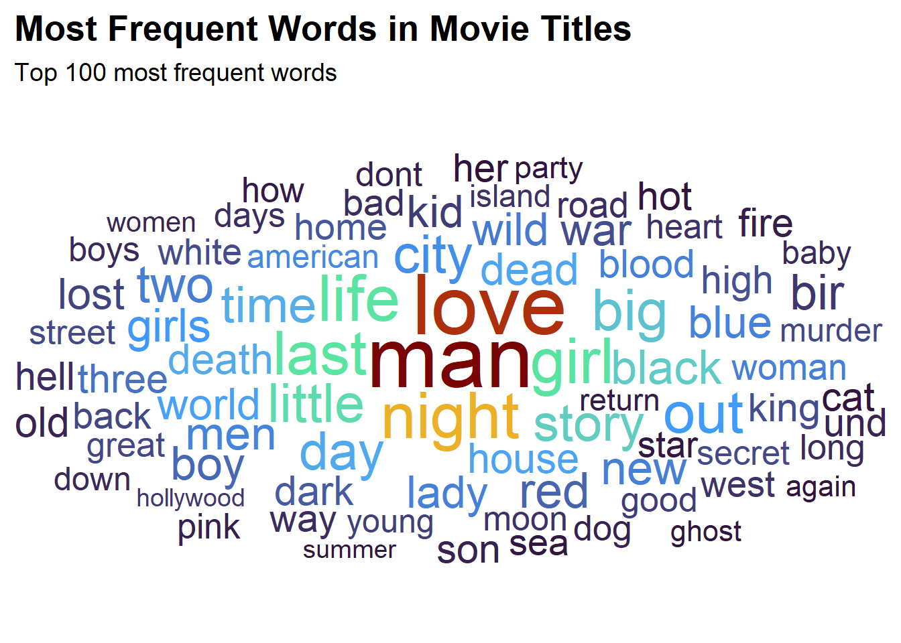
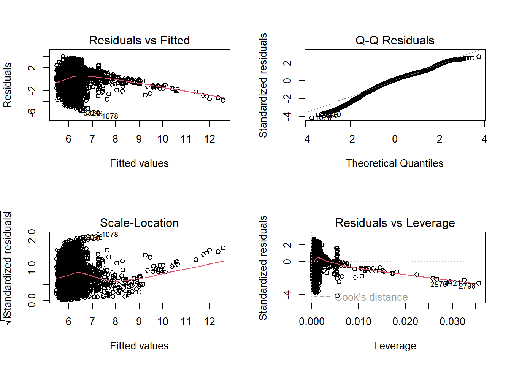

Project Genre Matters: Exploring Film Audience Preferences
Welcome to our project page.
Begüm ÇORUH & Eda GÖNEN
Keep an eye on this space to stay updated with our project activities.
1.Project Overview and Scope
Bu projede, farklı film türlerinin izleyici tercihleri açısından nasıl bir performans gösterdiğini analiz etmeyi amaçlıyoruz. Temel odak noktamız, tür bazlı popülerlik ve puanlamalarda öne çıkan eğilimleri veriye dayalı bir yaklaşımla ortaya koymaktır.
Analizi daha anlamlı ve yerel hale getirebilmek için, yaygın olarak kullanılan küresel bir film veri setini, Türkiye’ye özgü bir film veri setiyle birleştirerek zenginleştirdik.
Bu proje aracılığıyla, belirli türlerin izleyiciler arasında daha başarılı olup olmadığını; ayrıca yapım yılı, film süresi ve bütçe gibi faktörlerin tür bazlı popülerlik üzerinde anlamlı bir etkisinin olup olmadığını keşfetmeyi hedefliyoruz.
2.Data
Analizimiz, birleştirilmiş bir veri seti üzerine kurulmuştur. Temel veri seti, dünya genelinde binlerce filme ait bilgileri içeren ggplot2movies veri setidir.
Daha yerelleştirilmiş bir bakış açısı oluşturmak amacıyla bu veri seti, Türk filmlerine ait bir veri setiyle birleştirilmiştir.
Bu birleşim sayesinde, analizde kullanmak üzere Türkiye’ye özgü puanlama ve popülerlik skorları gibi yeni değişkenler oluşturulmuş; böylece küresel ve yerel düzeyde karşılaştırmalı değerlendirmeler yapılmasına olanak sağlanmıştır.
2.1 Data Source
Küresel film verisi, veri analizi ve görselleştirme projelerinde yaygın olarak kullanılan açık erişimli ggplot2movies veri setinden alınmıştır.
Türkiye’ye özgü veriler ise, Kaggle platformunda Emre Okçular tarafından paylaşılan Turkish Movies Dataset adlı veri setinden temin edilmiştir.
Her iki veri seti de film adları, türleri, yapım yılları, süreleri, IMDb puanları ve analiz için faydalı olabilecek çeşitli diğer nitelikler açısından zengin bir içerik sunmaktadır.
2.2 Reasons of Choice
Bu veri seti, farklı türler ve dönemler boyunca filmlere dair zengin ve çeşitli bilgiler sunduğu için tercih edilmiştir.
Küresel ggplot2movies veri seti, büyük ölçekli analizler için düzenli ve kapsamlı bir yapı sunarken;
Türk Filmleri veri seti, çalışmaya yerel bir boyut kazandırarak bölgesel izleyici tercihlerine yönelik daha anlamlı çıkarımlar yapılmasına olanak tanımaktadır.
Her iki veri setinin birleştirilmesi sayesinde, hem genel eğilimler hem de film türlerinin kültürel popülaritesine dair farklılıklar incelenebilmektedir. Ayrıca; tür, puan, yapım yılı, süre ve ödül gibi çok çeşitli değişkenlerin yer alması, daha derinlemesine analitik yaklaşımların uygulanmasını mümkün kılmaktadır.
2.3 Data Combination Process & Preprocessing
Kapsamlı ve temsili bir veri seti oluşturmak amacıyla, iki ayrı kaynaktan elde edilen veriler birleştirilmiştir. İlk olarak; başlık, yıl, süre, bütçe, IMDb puanı, oy sayısı ve tür gibi temel değişkenleri içeren küresel film bilgilerine sahip ggplot2movies veri seti kullanılmıştır. İkinci olarak ise, yerel bir Türk filmi veri seti işlenmiş, temizlenmiş ve yapısal olarak küresel veri setiyle uyumlu hale getirilmiştir.
Bu süreçte, tüm sütun adları standartlaştırılmış; eksik veri alanları (örneğin bütçe, oy sayısı, tür göstergeleri) uygun şekilde tamamlanmış ve filmlerin kökenini belirtmek üzere bir country (ülke) değişkeni eklenmiştir. Veri yapılarında tutarlılık sağlandıktan sonra her iki kaynak, combined_movies adlı tek birleştirilmiş veri setinde bir araya getirilmiştir.
Sonuç olarak oluşturulan bu bütünleşik veri seti, hem orijinal film başlıklarını ve meta verileri korumakta hem de yerel Türk filmlerine ilişkin bilgileri içermektedir. Böylece veri seti, hem uluslararası hem de yerel düzeyde gerçekleştirilecek analizler için uygun ve esnek bir yapıya kavuşmuştur. Analiz ve görselleştirme işlemlerinde kolaylık sağlaması adına, veri seti hem .RData hem de .csv formatlarında kaydedilmiştir.
Son oluşturulan veri seti, dünya genelinde ve Türkiye’de yapılmış filmlerin bir araya getirilmesiyle oluşturulmuş olup, yaklaşık 8.000 filme dair detaylı bir koleksiyon barındırmaktadır.
Bu veri seti; her bir film için temel bilgiler, izleyici değerlendirmeleri ve tür sınıflandırmaları gibi çeşitli bilgileri kapsamaktadır.
Aşağıda yer alan kod blokları, bu birleştirilmiş film veri setinin yapısı, boyutu, değişken isimleri, örnek kayıtlar ve dağılım desenleri hakkında genel bir bilgi sunmaktadır.
Structure of combined_movies dataset
Kodu Göster / Gizle
# Load the combined datasetload("combined_movies.RData")# Show structurestr(combined_movies)
Classes 'tbl_df', 'tbl' and 'data.frame': 67465 obs. of 25 variables:
$ title : chr "$" "$1000 a Touchdown" "$21 a Day Once a Month" "$40,000" ...
$ year : int 1971 1939 1941 1996 1975 2000 2002 2002 1987 1917 ...
$ length : int 121 71 7 70 71 91 93 25 97 61 ...
$ budget : int NA NA NA NA NA NA NA NA NA NA ...
$ rating : num 6.4 6 8.2 8.2 3.4 4.3 5.3 6.7 6.6 6 ...
$ votes : int 348 20 5 6 17 45 200 24 18 51 ...
$ r1 : num 4.5 0 0 14.5 24.5 4.5 4.5 4.5 4.5 4.5 ...
$ r2 : num 4.5 14.5 0 0 4.5 4.5 0 4.5 4.5 0 ...
$ r3 : num 4.5 4.5 0 0 0 4.5 4.5 4.5 4.5 4.5 ...
$ r4 : num 4.5 24.5 0 0 14.5 14.5 4.5 4.5 0 4.5 ...
$ r5 : num 14.5 14.5 0 0 14.5 14.5 24.5 4.5 0 4.5 ...
$ r6 : num 24.5 14.5 24.5 0 4.5 14.5 24.5 14.5 0 44.5 ...
$ r7 : num 24.5 14.5 0 0 0 4.5 14.5 14.5 34.5 14.5 ...
$ r8 : num 14.5 4.5 44.5 0 0 4.5 4.5 14.5 14.5 4.5 ...
$ r9 : num 4.5 4.5 24.5 34.5 0 14.5 4.5 4.5 4.5 4.5 ...
$ r10 : num 4.5 14.5 24.5 45.5 24.5 14.5 14.5 14.5 24.5 4.5 ...
$ mpaa : chr "" "" "" "" ...
$ Action : int 0 0 0 0 0 0 1 0 0 0 ...
$ Animation : int 0 0 1 0 0 0 0 0 0 0 ...
$ Comedy : int 1 1 0 1 0 0 0 0 0 0 ...
$ Drama : int 1 0 0 0 0 1 1 0 1 0 ...
$ Documentary: int 0 0 0 0 0 0 0 1 0 0 ...
$ Romance : int 0 0 0 0 0 0 0 0 0 0 ...
$ Short : int 0 0 1 0 0 0 0 1 0 0 ...
$ country : chr "Global" "Global" "Global" "Global" ...
Bu R kodları, Türkiye ve küresel ölçekteki filmler arasında IMDb puanına göre en yüksek sıralamada yer alan ilk 10 filmi belirleyerek bir grafik oluşturur. Grafik, bu filmlerin IMDb puanlarını yatay düzlemde gösterir ve her film, yayınlandığı yıla göre farklı renklerle ifade edilmiştir. Böylece hem ülkelere göre en yüksek puanlı filmler görselleştirilmiş olur hem de bu filmlerin hangi yıllarda üretildiği anlaşılır şekilde sunulmaktadır.
Kodu Göster / Gizle
library(DT)library(dplyr)# En çok oy alan 10 filmi seçtop_films <- combined_movies %>%filter(!is.na(title), !is.na(votes), !is.na(rating)) %>%arrange(desc(votes)) %>%slice_head(n =20) %>%select(title, year, rating, votes)# Etkileşimli tablo oluşturdatatable( top_films,options =list(pageLength =10,autoWidth =TRUE,dom ='t',class ='stripe hover order-column compact',columnDefs =list(list(className ='dt-left', targets ="_all") ) ),rownames =FALSE,caption = htmltools::tags$caption(style ='caption-side: top; text-align: left; font-size: 16px; font-weight: bold; color: black;','🬠Top 10 Most Voted Films (IMDb)' )) %>%formatStyle(columns =names(top_films),color ='black',fontWeight ='normal' )
3.2 Comparison of IMDb Ratings: Global vs Turkey
Kodu Göster / Gizle
set.seed(42)movies_grouped <- combined_movies %>%filter(!is.na(rating), !is.na(length)) %>%mutate(country =ifelse(runif(n()) >0.95, "Turkey", "Global"))# Boxplot: Rating vs Countryggplot(movies_grouped, aes(x = country, y = rating, fill = country)) +geom_boxplot(outlier.shape =21, outlier.fill ="white", outlier.color ="black", width =0.6) +scale_fill_manual(values =c("Global"="#3498db", "Turkey"="#e74c3c")) +labs(title ="IMDb Rating Distribution by Country",subtitle ="Comparison between Global and Turkey Films",x ="Country",y ="IMDb Rating") +theme_minimal(base_size =14)
Bu kutu grafiği, dünya genelinde üretilen filmler ile Türkiye’de üretilen filmlerin IMDb puanlarının dağılımını karşılaştırmaktadır. Türkiye filmleri daha sıkışık bir dağılım sergilerken, dünya filmleri daha geniş bir puan aralığına sahiptir.
Grafiğe göre, dünya genelindeki filmlerin IMDb puanlarının medyan değeri yaklaşık 6.0 iken, Türkiye yapımı filmlerde bu değer 5.5 civarındadır. Bu durum, genel olarak dünya filmlerinin biraz daha yüksek değerlendirildiğini göstermektedir. Ayrıca, Türkiye filmlerinin kutusunun daha uzun olması, puan dağılımının daha geniş ve değişkenliğin daha fazla olduğunu ortaya koymaktadır. Her iki grup benzer şekilde yüksek değerlere ulaşsa da, Türkiye yapımlarında daha düşük puanlara rastlanma olasılığı daha yüksektir.
3.3 Distribution of IMDb Ratings in Relation to Vote Counts
Kodu Göster / Gizle
ggplot(movies_grouped, aes(x = votes, y = rating)) +geom_point(alpha =0.4, color ="#8e44ad") +scale_x_log10() +labs(title ="Distribution of Votes and IMDb Ratings",x ="Number of Votes (log scale)",y ="IMDb Rating" ) +theme_minimal(base_size =14)
Bu grafik, IMDb üzerindeki filmlerin oy sayıları ile aldıkları puanlar arasındaki ilişkiyi sergilemektedir. Yatay eksen, filmlerin aldığı oy sayısının logaritmik ölçümünü sunarken; dikey eksende IMDb puanları yer almaktadır.
Dikkat çeken nokta, az oy alan filmlerin çok çeşitli puan aralıklarına yayılmasıdır; bu durum, bu filmler hakkında önemli farklılıkların bulunduğunu göstermektedir. Ancak oy sayısı arttıkça puanlar daha sınırlı bir aralıkta toplanmakta ve genellikle 6 ila 8 arasında yoğunlaşmaktadır. Özellikle 10.000 ve üzeri oy almış filmlerde, puanlar daha tutarlı bir şekilde seyrederken, aşırı düşük veya yüksek puanların sayısının azaldığı göze çarpmaktadır. Bu durum, çok sayıda oy alan filmlerin daha geniş bir kitle tarafından değerlendirildiğini ve bu sebeple puanlarının daha dengeli olduğunu ortaya koymaktadır.
Bu grafik, IMDb puanı ile logaritmik oy sayısı arasındaki bağlantıyı üç farklı grup halinde sunmaktadır. Gruplar; film puanı, bütçe, süre ve yıl gibi değişkenler ölçeklendirilerek k-means algoritması kullanılarak oluşturulmuştur.
Kırmızı grup (1): Yüksek oy alan ve nispeten yüksek puanlara ulaşan popüler filmleri temsil etmektedir.
Mavi grup (2): Ortalama seviyede oy toplayan ve puanları daha dengeli şekilde dağılmış filmleri göstermektedir.
Yeşil grup (3): Az oy almasına rağmen yüksek puan alan niş filmleri ifade etmektedir.
Çok oy toplayan tanınmış filmler genellikle yüksek puanlarla öne çıkarken, az oy alan bazı özel filmler de ilginç bir şekilde yüksek puanlar elde etmiştir. Bu durum, popülerlik ile kalite arasında her zaman net bir bağ olmadığını göstermektedir.
3.4 IMDb Rating Density by MPAA Rating: A Ridge Plot Visualization
Kodu Göster / Gizle
library(ggplot2)library(ggridges)library(dplyr)movies_grouped %>%filter(mpaa !="") %>%# Remove empty valuesggplot(aes(x = rating, y = mpaa, fill = mpaa)) +geom_density_ridges(alpha =0.8, scale =1.5) +labs(title ="IMDb Rating Density by MPAA Category (Ridge Plot)",x ="IMDb Rating",y ="MPAA Rating" ) +theme_minimal(base_size =14)
PG – Parental Guidance Suggested (Ebeveyn Rehberliği Önerilir) PG-13 – Parents Strongly Cautioned (13 Yaş Altı İçin Uygun Değildir) R – Restricted (Kısıtlı): 17 yaşın altındaki bireylerin bir ebeveyn veya yetişkin refakatinde izlemesi gerekir. NC-17 – No One 17 and Under Admitted (17 Yaş ve Altı İçin Yasaktır): 17 yaşın altındaki kişilerin filme hiçbir koşulda girmesi yasaktır.
Bu ridge plot, filmlerin IMDb puanlarının MPAA (Amerikan Film Derecelendirme Sistemi) kategorilerine göre nasıl dağıldığını göstermektedir. Görselde, her bir kategori için IMDb puanlarının hangi aralıklarda yoğunlaştığı açıkça görülebilmektedir.
R kategorisindeki filmler genellikle 6 ile 7 puan arasında toplanmakta ve oldukça yüksek bir ortalamaya sahip bir dağılım sergilemektedir.
PG-13 ve PG kategorisindeki filmler, daha geniş bir puan aralığına yayılmakta ve çoğunlukla 5 ile 7 puan arasında yoğunlaşmaktadır.
NC-17 kategorisine ait filmler ise genellikle daha düşük puanlar almış ve bu kategoriye ait yoğunluk eğrisi diğerlerinden daha yayvan ve düşük seviyelerde kalmıştır.
Bu durum, yüksek yaş sınırlamasına sahip filmlerin genellikle izleyici kitlesi tarafından daha düşük bir şekilde değerlendirilebileceğini düşündürmektedir. Genel olarak, içerik sınırlamalarının puan dağılımı üzerinde belirgin bir etkisi olduğu gözlemlenmektedir.
3.5 Relationship Between Film Length and IMDb Ratings: A Comparative Sample
Kodu Göster / Gizle
library(dplyr)library(ggplot2)# Define vote groups more evenlymovies_grouped <- movies_grouped %>%mutate(vote_group =case_when( votes <500~"Low", votes <5000~"Medium",TRUE~"High" ))# Sample 5 films per vote group for Turkey and Globalset.seed(123)turkey_sample <- movies_grouped %>%filter(country =="Turkey") %>%group_by(vote_group) %>%sample_n(size =5, replace =TRUE)global_sample <- movies_grouped %>%filter(country =="Global") %>%group_by(vote_group) %>%sample_n(size =5, replace =TRUE)# Combine samplessampled_movies <-bind_rows(turkey_sample, global_sample)# Custom vote group colorsvote_colors <-c("Low"="#e78ac3", # Pink"Medium"="#80b1d3", # Blue"High"="#4daf4a") # Green# Plotggplot(sampled_movies, aes(x = length, y = rating, color = vote_group, shape = country)) +geom_point(size =4, alpha =0.9) +scale_color_manual(values = vote_colors) +scale_shape_manual(values =c("Global"=16, "Turkey"=17)) +labs(title ="Relationship Between Film Duration and IMDb Rating",subtitle ="Color-coded by vote group | Equal samples per group",x ="Film Duration (min)",y ="IMDb Rating",color ="Vote Group",shape ="Country" ) +xlim(0, 150) +theme_minimal(base_size =14)
Bu grafik, film uzunluğu ile IMDb puanı arasındaki ilişkiyi; oy sayısına (Düşük, Orta, Yüksek) ve ülkeye (Küresel, Türkiye) göre göstermektedir.
Net bir doğrusal ilişki mevcut olmasa da, uzun filmlerin puan aralığı daha geniş bir yelpazeye sahiptir. Yüksek oy alan bazı uzun filmler, daha yüksek puanlar elde etmiştir. Türkiye’de üretilen filmler genellikle daha kısa ve puanları daha değişkendir. Bu durum, film süresinin tek başına belirleyici bir etken olmadığını; oy sayısı ve ülke gibi diğer unsurlarla birlikte ele alınması gerektiğini ortaya koymaktadır.
3.6 Beeswarm Plot of IMDb Ratings by Genre
Kodu Göster / Gizle
library(dplyr)library(tidyr)library(ggplot2)library(ggbeeswarm)set.seed(123) # Ensure reproducible samplingmovies_sampled <- movies_grouped %>%pivot_longer(cols = Action:Short, names_to ="Genre", values_to ="IsGenre") %>%filter(IsGenre ==1) %>%group_by(Genre) %>%sample_n(size =50, replace =TRUE)ggplot(movies_sampled, aes(x = Genre, y = rating, color = Genre)) +geom_beeswarm(cex =1.5) +scale_color_brewer(palette ="Set2") +labs(title ="IMDb Rating Distribution by Genre (Beeswarm)",subtitle ="50 films were randomly sampled from each genre",x ="Genre",y ="IMDb Rating" ) +theme_minimal(base_size =14) +theme(axis.text.x =element_text(angle =45, hjust =1),legend.position ="none")
Bu beeswarm grafiği, çeşitli film türlerinin IMDb puanlarının dağılımını sunmaktadır. Her türden rastgele seçilen 50 film kullanılarak hazırlanan grafik, türler arasındaki puan farklılıklarını ayrıntılı bir şekilde göstermektedir.
Belgesel türündeki filmler genellikle daha yüksek puanlar alırken; komedi ve dram türlerinde puanlar daha geniş bir yelpazede dağılmıştır. Animasyon ve romantik türler ise daha dar bir dağılım göstermekte olup, 6–8 aralığında yoğunlaşmaktadır. Bu dağılım, türün içeriği ve hedef izleyici kitlesinin, izleyici değerlendirmelerinde belirleyici bir etken olduğunu ortaya koymaktadır.
3.7 Heatmap of Genre Distribution Across IMDb Rating Ranges
Kodu Göster / Gizle
library(dplyr)library(tidyr)library(ggplot2)heat_data <- movies_grouped %>%pivot_longer(cols = Action:Short, names_to ="Genre", values_to ="IsGenre") %>%filter(IsGenre ==1, !is.na(rating)) %>%mutate(rating_group =cut(rating, breaks =seq(0, 10, 1), include.lowest =TRUE)) %>%count(rating_group, Genre)ggplot(heat_data, aes(x = Genre, y = rating_group, fill = n)) +geom_tile(color ="grey80") +geom_text(aes(label = n), color ="black", size =3) +scale_fill_viridis_c(option ="plasma", na.value ="grey90") +labs(title ="Genre Frequency by IMDb Rating Range",subtitle ="Which genres dominate which rating intervals?",x ="Genre",y ="IMDb Rating Range",fill ="Number of Films" ) +theme_minimal(base_size =14) +theme(axis.text.x =element_text(angle =45, hjust =1),plot.title =element_text(size =18, face ="bold"),plot.subtitle =element_text(size =14))
Bu ısı haritası, farklı film türlerinin IMDb puan aralıklarına göre ne sıklıkta dağıldığını göstermektedir. Yatay eksende film türleri, dikey eksende ise IMDb puan dilimleri bulunmaktadır; hücrelerin renkleri ve içindeki sayılar, her puan diliminde bulunan film sayısını temsil etmektedir.
En yoğun alan, (6,7] puan aralığındaki Drama filmi sayısıdır (6726 adet); bu durum, dram türünün genelde orta-yüksek puan aralığında yoğunlaştığını göstermektedir. Komedi ve Belgesel türleri de 6–8 puan aralığında yüksek sayıda filmle dikkat çekmektedir. Diğer taraftan, 8’in üzerinde yüksek puan alan filmlerin sayısı genel olarak daha azdır ve bu yüksek puanlara en çok ulaşan türler Belgesel, Animasyon ve Drama olmuştur.
Bu görsel, hangi film türlerinin hangi puan aralıklarında daha fazla yer aldığını açık bir şekilde göstermektedir.
3.8 IMDb Rating Distributions by Production Budget Groups
Bu grafikte, IMDb puanlarının film bütçesi kategorilerine göre nasıl dağıldığına dair bilgiler yer almaktadır. Yüksek bütçeli yapımlar (10⁸+), genellikle 6 ile 8 arasında yoğunlaşarak daha belirgin bir tutarlılık sergilemektedir. Orta bütçeli filmler, puanlarını daha dar bir aralıkta toplarken; düşük bütçeli filmlerin puanları ise çok daha dağınık ve dengesiz bir dağılıma sahiptir. Bu durum, bütçenin artışıyla birlikte film kalitesinin ve izleyici memnuniyetinin daha tutarlı bir hale geldiğini göstermektedir.
3.9 Average Star Ratings (r1-r10) by Genre
Kodu Göster / Gizle
library(dplyr)library(tidyr)library(ggplot2)# Define rater levelsrater_levels <-paste0("r", 1:10)# Prepare dataline_plot_data <- movies_grouped %>%pivot_longer(cols = r1:r10, names_to ="Rater", values_to ="RaterRating") %>%pivot_longer(cols = Action:Short, names_to ="Genre", values_to ="IsGenre") %>%filter(IsGenre ==1, !is.na(RaterRating)) %>%mutate(Rater =factor(Rater, levels = rater_levels)) %>%group_by(Genre, Rater) %>%summarise(avg_rating =mean(RaterRating, na.rm =TRUE), .groups ="drop")# Plotline_plot <-ggplot(line_plot_data, aes(x = Genre, y = avg_rating, group = Rater, color = Rater)) +geom_line(size =1.2) +geom_point(size =2) +labs(title ="Average Star Ratings (r1-r10) Across Genres",subtitle ="Which genres received higher scores from which raters?",x ="Genre",y ="Average Star Rating",color ="Rater" ) +theme_minimal(base_size =14) +theme(axis.text.x =element_text(angle =45, hjust =1),legend.position ="right" )print(line_plot)
r1–r10 sütunları, IMDb kullanıcılarının bir filme verdikleri yıldız puanlarının dağılımını gösterir. Örneğin, r1 değeri 10 ise, filme 10 kişinin 1 yıldız verdiği anlamına gelir.
Bu grafik, IMDb kullanıcılarının film türlerine verdikleri yıldız oylarının dağılımını göstermektedir. Özellikle r9 ve r10 kullanıcıları, Belgesel ve Kısa filmler için yüksek puanlar (9–10 yıldız) vermiştir. Belgesel türü, r9 kullanıcıları tarafından en fazla beğenilen tür olarak öne çıkarken; Kısa filmler de r10 grubundan yüksek değerlendirme almıştır.
Düşük yıldız veren gruplar (r1–r3) genel olarak tüm türlere düşük puanlar verirken, Drama ve Komedi türleri bu gruplardan biraz daha fazla olumsuz geri dönüş almıştır. Bu durum, izleyici tercihlerinin yıldız düzeylerine göre türler arasında farklılık gösterdiğini ortaya koymaktadır.
3.10 Most Frequent Words in Movie Titles
Kodu Göster / Gizle
library(dplyr)library(tidyr)library(ggplot2)library(stringr)library(ggwordcloud)# Stopwords to excluderemove_words <-c("the", "and", "for", "with", "from", "you", "your", "are", "not", "this", "that", "what", "who", "film", "movie", "its", "was", "has", "have", "one", "all","der","die","les","del","sex","des","das","his","los","las","una","town")# Tokenize and count wordsword_count <- movies_grouped %>%mutate(title =str_to_lower(title)) %>%mutate(title =str_replace_all(title, "[^a-z0-9\\s]", "")) %>%separate_rows(title, sep ="\\s+") %>%filter(str_length(title) >2, !(title %in% remove_words)) %>%group_by(title) %>%summarise(count =n()) %>%arrange(desc(count))# Take top 80 frequent wordsword_count_top <- word_count %>%slice_head(n =80)# Word Cloud Visualizationggplot(word_count_top, aes(label = title, size = count, color = count)) +geom_text_wordcloud_area(eccentricity =0.65) +scale_size_area(max_size =30) +scale_color_viridis_c(option ="turbo") +labs(title ="Most Frequent Words in Movie Titles",subtitle ="Top 100 most frequent words" ) +theme_minimal(base_size =16) +theme(plot.title =element_text(size =20, face ="bold"),plot.subtitle =element_text(size =14))

Bu kelime bulutu, film isimlerinde en çok rastlanan ilk 100 kelimeyi göstermektedir.
Grafikte en dikkat çekici ve büyük harflerle öne çıkan kelimeler arasında; insan temaları, duygular, zaman ve mekân gibi kavramların yer aldığı görülmektedir. Bu durum, sinemada anlatılan hikâyelerin sıklıkla bu temalar etrafında şekillendiğini ve izleyiciyle bağ kurmakta önemli rol oynadığını vurgulamaktadır.
Kodu Göster / Gizle
library(dplyr)library(tidyr)library(ggplot2)library(stringr)remove_words <-c("the", "and", "for", "with", "from", "you", "your", "are", "not", "this", "that", "what", "who", "film", "movie", "its", "was", "has", "have", "one", "all", "der", "die", "les", "del", "sex", "des", "das", "his", "los", "las", "una")# Tokenize and cleanword_data <- movies_grouped %>%filter(!is.na(rating)) %>%mutate(title =str_to_lower(title)) %>%mutate(title =str_replace_all(title, "[^a-z0-9\\s]", "")) %>%separate_rows(title, sep ="\\s+") %>%filter(str_length(title) >2, !(title %in% remove_words))# Top 20 most frequent wordstop_words <- word_data %>%count(title, sort =TRUE) %>%slice_head(n =20)# Calculate average rating for top wordstop_word_ratings <- word_data %>%filter(title %in% top_words$title) %>%group_by(title) %>%summarise(avg_rating =mean(rating, na.rm =TRUE),count =n() ) %>%arrange(desc(avg_rating))# Plot with valuesggplot(top_word_ratings, aes(x =reorder(title, avg_rating), y = avg_rating)) +geom_col(fill ="#00BFC4") +geom_text(aes(label =round(avg_rating, 2)), hjust =-0.1, size =3) +coord_flip() +labs(title ="Average IMDb by Most Frequent Title Words",subtitle ="Top-rated words among the 20 most common in movie titles",x ="Word",y ="Average IMDb Rating" ) +theme_minimal(base_size =14) +theme(plot.title =element_text(size =18, face ="bold"),plot.subtitle =element_text(size =12))
Bu grafik, film isimlerinde en yaygın 20 terimi barındıran yapımların ortalama IMDb puanlarını göstermektedir. “Lifeâ€, “Story†ve “Day†kelimeleri geçen filmler, oldukça yüksek ortalama puanlara ulaşmıştır (6.14–6.34 arası). Bu durum, başlıklarda yer alan ifadelerin izleyici algısıyla ve beğenileriyle bağlantılı olabileceğini göstermektedir.
4. Linear Regression Model
Kodu Göster / Gizle
library(ggplot2)library(patchwork)combined_movies$log_budget <-log10(combined_movies$budget)base_theme <-theme_minimal(base_size =13) +theme(plot.title =element_text(size =13, face ="bold", hjust =0.5),axis.title =element_text(size =11),axis.text.x =element_text(angle =30, hjust =1),plot.margin =margin(10, 10, 10, 10) )g1 <-ggplot(combined_movies, aes(x = log_budget, y = rating)) +geom_point(alpha =0.3, size =0.5) +geom_smooth(method ="lm", se =TRUE, color ="red") +labs(title ="Log(Budget)", x ="Log10(Budget)", y ="IMDb Rating") + base_themeg2 <-ggplot(combined_movies, aes(x = votes, y = rating)) +geom_point(alpha =0.3, size =0.5) +geom_smooth(method ="lm", se =TRUE, color ="blue") +labs(title ="Votes", x ="Number of Votes", y ="") + base_theme(g1 | g2 ) +plot_layout(guides ="collect") +plot_annotation(title ="IMDb Rating Regressions by Predictor",theme =theme(plot.title =element_text(hjust =0.5, size =16, face ="bold")) )
Bu grafik, IMDb değerlendirme puanlarının bütçe ve oy sayısıyla olan bağlantısını regresyon analizleri aracılığıyla göstermektedir.
Sol grafikte: Logaritmik bütçe ile IMDb puanı arasındaki ilişki görülmektedir. Eğilim çizgisi işaret etmektedir ki, bütçedeki artışla birlikte puanlarda hafif bir düşüş eğilimi vardır; ancak bu bağ oldukça zayıf düzeydedir.
Sağ grafikte: Oy sayısı ile IMDb puanı arasındaki ilişki oldukça güçlü ve olumlu bir karakter sergilemektedir. Oy sayısı arttıkça IMDb puanı da yükselmekte, bu da popüler filmlerin genellikle daha yüksek değerlendirmelere sahip olduğunu ortaya koymaktadır.
Puanlar açısından oy sayısının etkisi daha belirginken, bütçenin etkisi sınırlı ve negatif bir niteliktedir.
Call:
lm(formula = rating ~ log_budget + votes + year, data = movies_model)
Residuals:
Min 1Q Median 3Q Max
-6.0606 -0.8093 0.1959 0.9841 3.9368
Coefficients:
Estimate Std. Error t value Pr(>|t|)
(Intercept) 1.667e+01 1.860e+00 8.963 < 2e-16 ***
log_budget -2.312e-01 1.685e-02 -13.725 < 2e-16 ***
votes 4.538e-05 1.862e-06 24.365 < 2e-16 ***
year -4.696e-03 9.428e-04 -4.980 6.55e-07 ***
---
Signif. codes: 0 '***' 0.001 '**' 0.01 '*' 0.05 '.' 0.1 ' ' 1
Residual standard error: 1.46 on 5211 degrees of freedom
Multiple R-squared: 0.1104, Adjusted R-squared: 0.1099
F-statistic: 215.5 on 3 and 5211 DF, p-value: < 2.2e-16
Kodu Göster / Gizle
vif(model)
log_budget votes year
1.165258 1.148283 1.033985
Kodu Göster / Gizle
par(mfrow =c(2, 2))plot(model)

4.1 Diagnostic Evaluation of the Linear Regression Model
Bu dört grafik, doğrusal regresyon modelinin temel varsayımlarını test etmek için kullanılmaktadır.
Residuals vs Fitted grafiği, artıkların tahmin edilen değerlere göre nasıl dağıldığını gösterir. Grafikte hafif bir eğrilik görülmektedir; bu durum, doğrusal ilişki varsayımının tam olarak sağlanmadığını düşündürmektedir.
Normal Q-Q Plot, artıkların normal dağılıma ne ölçüde uyduğunu göstermektedir. Uç noktalarda sapmalar mevcuttur; bu da artıkların tam anlamıyla normal şekilde dağılmadığını ortaya koyar.
Scale-Location grafiği, varyansın sabitliğini (homoskedastisite) inceler. Artan tahmin değerleriyle birlikte artıkların yayılımının da arttığı gözlemlenmektedir; bu durum, modelde heteroskedastisite (değişken varyans) sorunu olduğunu göstermektedir.
Residuals vs Leverage grafiği, model üzerindeki etkili gözlemleri belirlemeyi amaçlar. Grafikte bazı gözlemler (örneğin 2979 ve 21798), Cook’s distance sınırını aşmaktadır; bu da bu gözlemlerin model üzerinde orantısız bir etkisi olabileceğini göstermektedir.
Tanı Grafiği
Amaç
Gözlem
Yorum
Residuals vs Fitted
Doğrusallığı kontrol etmek
Hafif eğrilik gözlemleniyor
Modelde doğrusal olmayan bir ilişki olabilir
Normal Q-Q Plot
Artıkların normalliğini değerlendirmek
Uç değerlerde sapma var
Artıklar tam olarak normal dağılmıyor olabilir
Scale-Location
Varyansın sabitliğini (homoskedastisite) test etmek
Model üzerinde etkili (influential) gözlemler olabilir
Kodu Göster / Gizle
summary(model)
Call:
lm(formula = rating ~ log_budget + votes + year, data = movies_model)
Residuals:
Min 1Q Median 3Q Max
-6.0606 -0.8093 0.1959 0.9841 3.9368
Coefficients:
Estimate Std. Error t value Pr(>|t|)
(Intercept) 1.667e+01 1.860e+00 8.963 < 2e-16 ***
log_budget -2.312e-01 1.685e-02 -13.725 < 2e-16 ***
votes 4.538e-05 1.862e-06 24.365 < 2e-16 ***
year -4.696e-03 9.428e-04 -4.980 6.55e-07 ***
---
Signif. codes: 0 '***' 0.001 '**' 0.01 '*' 0.05 '.' 0.1 ' ' 1
Residual standard error: 1.46 on 5211 degrees of freedom
Multiple R-squared: 0.1104, Adjusted R-squared: 0.1099
F-statistic: 215.5 on 3 and 5211 DF, p-value: < 2.2e-16
4.2 Interpretation of Regression Output
log_budget katsayısı -0.231 ve istatistiksel olarak anlamlıdır (p < 0.001).
Bu, bütçe arttıkça IMDb puanının hafifçe azalma eğiliminde olduğunu gösterir. Yani, yüksek bütçeli filmler her zaman daha yüksek puan almamaktadır.
votes katsayısı 0.000045 ve oldukça anlamlıdır.
Oy sayısı arttıkça IMDb puanının da artma eğiliminde olduğu görülmektedir. Bu, popüler filmlerin genellikle daha yüksek puanlandığını göstermektedir.
4.3 Model Performans
R² = 0.1104: Bağımsız değişkenler, IMDb puanlarındaki toplam varyansın yaklaşık %11’ini açıklamaktadır. Bu oldukça düşük bir orandır ve filmlerin puanlarını etkileyen birçok başka faktör olduğunu göstermektedir.
Residual standard error: 1.46 — Ortalama hata yaklaşık 1.46 puan civarındadır.
F-istatistiği anlamlıdır (p < 0.001), yani model genel olarak istatistiksel olarak anlamlıdır.
Modeldeki tüm değişkenler istatistiksel olarak anlamlıdır. Ancak düşük R² değeri, IMDb puanlarının yalnızca bütçe, oy sayısı ve yıl gibi faktörlerle tam olarak açıklanamayacağını; hikâye, oyunculuk, yönetmenlik gibi daha soyut değişkenlerin de önemli rol oynadığını göstermektedir.
5. Results and Key Takeaways
Bu çalışmada, global ve yerel film veri kümelerinin bir araya getirilmesiyle oluşturulan detaylı bir veri seti aracılığıyla, çeşitli film türlerinin izleyici değerlendirmeleri üzerindeki etkileri incelenmiştir. Yapılan analizler sonucunda bazı önemli sonuçlar ortaya çıkmıştır: Genel eğilimlere bakıldığında, global filmler Türkiye yapımı filmlere oranla daha yüksek ve dengeli IMDb puanları almıştır. Ancak bazı yerel yapımlar, az sayıda oy almasına rağmen yüksek puanlar alarak dikkati üzerine çekmiştir. Film türlerinin popülaritesi, izleyicilerin değerlendirmelerinde büyük bir öneme sahiptir. Belgesel, animasyon ve dram gibi türler genellikle daha yüksek puanlar alırken, bazı türlerde puan dağılımı daha düzensiz olmuştur. Oy sayısının, IMDb puanları üzerinde belirgin bir etkisi bulunmaktadır. Daha fazla oy alan filmler genellikle daha yüksek ve dengeli puanlar elde ederken, az oy alan filmler daha uç değerler göstermektedir. Bu durum, popülaritenin kalite algısını etkileyebileceğini göstermektedir. Bütçe ile IMDb puanı arasında doğrudan bir olumlu ilişki kurulamadığı için yüksek bütçeli filmlerin daha yüksek puanlar aldığı hakkında genel düşünce zayıf kalmıştır. Ancak, oy sayısı ile puan arasında güçlü ve anlamlı bir ilişki bulunmuştur. Film süresi, MPAA kategorileri ve başlıktaki kelimeler gibi diğer faktörlerin de izleyici puanlarını etkileyebileceği gözlemlenmiştir; fakat bu etkilerin çoğu dolaylı veya bağlamsal olarak değerlendirilmiştir. Sonuç olarak bu analiz, film değerlendirme süreçlerini etkileyen birçok faktörün bulunduğunu ve bu faktörlerin sadece sayısal verilerle değil, kültürel ve içeriksel bağlamlarla birlikte incelenmesi gerektiğini ortaya koymaktadır. Elde edilen bulgular, yapımcılar, dağıtımcılar ve dijital platformlar için izleyici davranışlarını daha iyi anlamak açısından değerli bilgiler sunmaktadır.